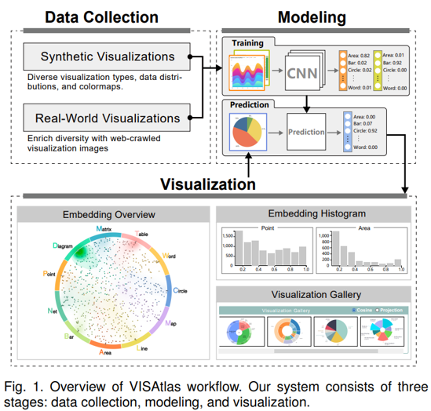
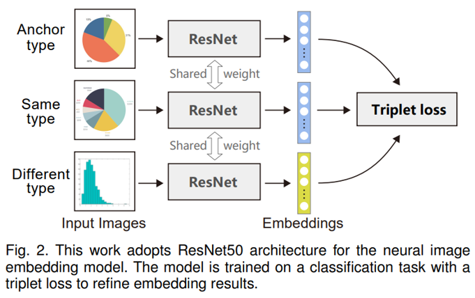
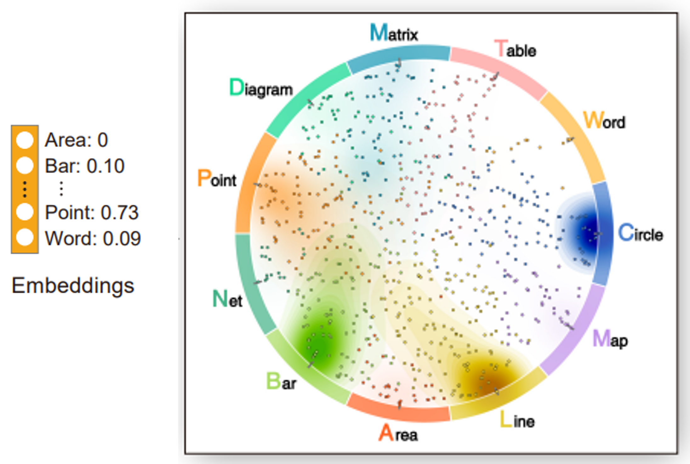
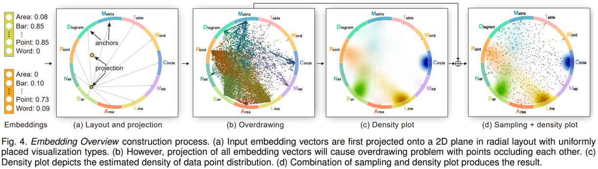
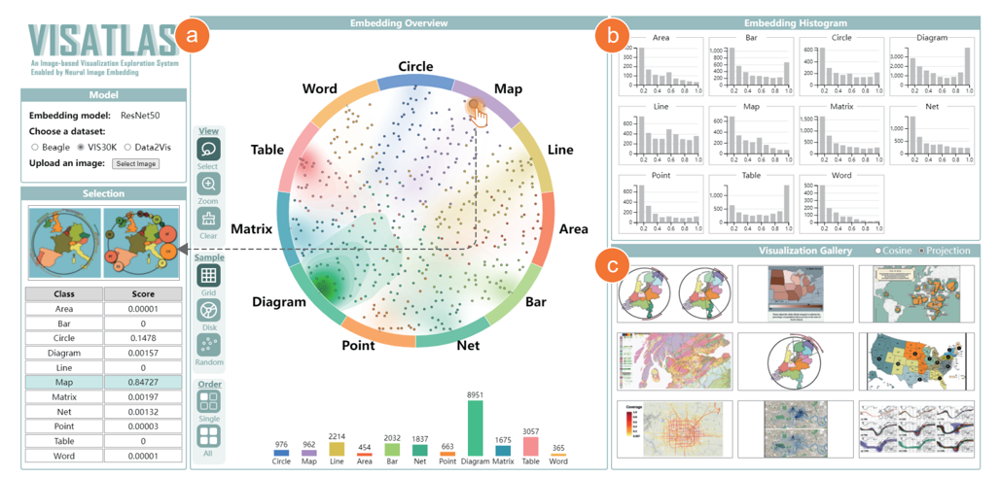
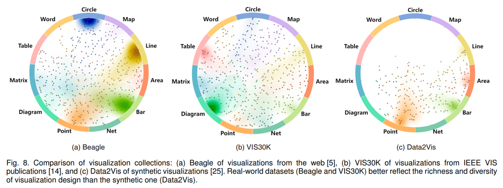
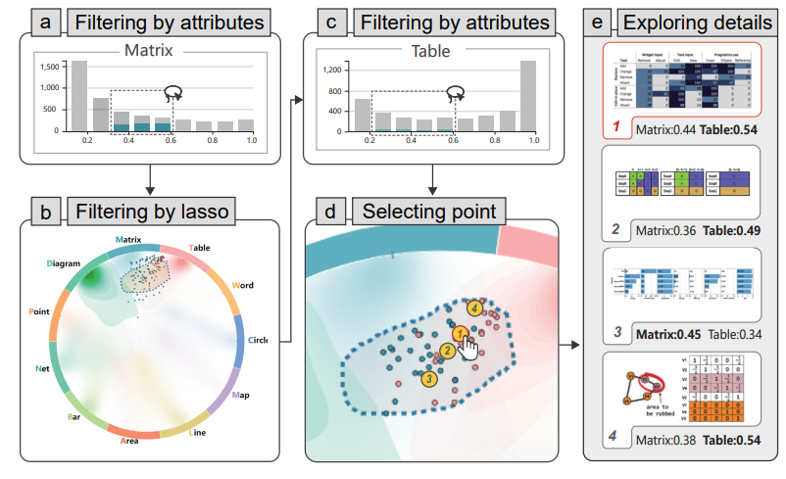
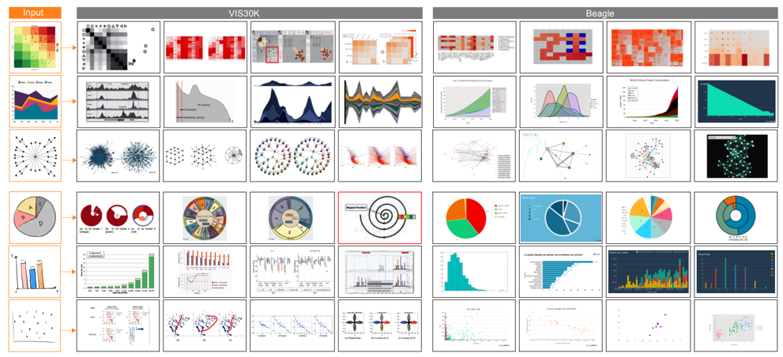

论文：VISAtlas: An Image-based Exploration and Query System for Large Visualization Collections via Neural Image Embedding
作者：Yilin Ye, Rong Huang, and Wei Zeng
发表：VIS 2023
这篇论文介绍了 VISAtlas，这是一种基于图像的方法，利用神经图像嵌入技术，以促进对可视化集合的探索和查询。为了提高嵌入的准确性，作者创建了一套包括合成和真实世界可视化的数据集，并使用它来训练一个带有三元损失的卷积神经网络（CNN）模型，用于对可视化进行分类。接下来，作者设计了一个协调多视图（CMV）系统，该系统可以基于可视化嵌入进行多角度的探索和设计检索。作者在三个案例研究和一个用户研究中展示了 VISAtlas 在支持可视化集合的比较分析、复合可视化的探索以及基于图像的可视化设计检索方面的有效性。这些研究表明，真实世界的可视化集合（例如 Beagle 和 VIS30K）比合成集合（例如 Data2Vis）在可视化设计上更为丰富和多样，真实世界集合中包含更多的复合可视化，并且不同来源的可视化中存在着不同的设计模式。
背景介绍
近年来，很多可视化图片集被创建用于各种各样的任务，例如可视化参考系统、机器学习、设计空间研究、由数据驱动的可视化设计等。这些集合对于不同的用户是非常由帮助的，例如可视化新手可以通过探索这些集合来学习不同类型的可视化、可视化机器学习研究者可以用这些集合来训练和测试模型、设计师可以从中获取设计灵感。然而，面对如此多不同的可视化集合他们可能会遇到一些问题，比如该使用那个集合？给出一个示例如何在不同集合中找到相似的结果？以及如何改进缺少某类特定任务数据的集合？这些问题都有待进一步研究。
本文主要解决如何更有效的对各种可视化集合进行探索的问题，挑战主要有数据和图像嵌入两方面。数据方面，很多不同的集合其元数据各不相同。一些集合会有很丰富的元数据比如作者、分类甚至可视化代码，但也有很多集合不包含这些元数据，这使得很难用传统的关键字检索系统来探索不同的可视化集合。其次大量的可视化图像为高效的可视化探索和浏览带来了困难。不管是特征工程还是深度神经网络提取出的底层图像特征都难以解释，常用的降维方法像 t-SNE 是非常依赖于数据的。这意味着不同的数据会生成完全不同的布局，这使得不同集合间很难保持一个稳定的可解释的布局。
方法
为解决这些问题，本文提出了针对可视化集合探索的图像嵌入模型。他用在合成和真实可视化数据集上训练的 CNN 模型对可视化图片分类来生成可解释的图像嵌入，然后通过对图像嵌入上下文投影来生成一个在不同集合间稳定的可解释的布局。

作者首先收集了真实以及合成的不同类型可视化图片，用这些数据训练了一个基于 CNN 的可视化图片分类模型，模型使用 resnet 结构以及三元损失函数来帮助其更好的区分不同类型的可视化。

然后，由图像嵌入模型预测出的多维图像嵌入向量通过上下文投影法可视化到二维平面上。

对于上下文投影，先使用 Radvis 方法，将每个结果点投影到圆盘上每个维度对应一个可视化类型。然而，因为可视化集合数量庞大会导致点过于密集，为解决这个问题，作者采用了密度图和点采样相结合的方式，这样既能看到总体的分布趋势也能探索各种类型的点。

基于该方法，作者开发了一个可视化界面用于探索这些可视化集合。系统主要由三个视图组成，embedding overiew、embedding histogram 和 visualization gallery。中间 A 的这块区域为 embedding overview,展示可视化集合中图像嵌入及其上下文投影后的结果。B 区域是 Embedding histogram 展示了整个数据集不同类型的得分。C 区域是 visualization grallery 展示了与用户所选的投影点或上传图片相近的图片结果。

案例研究
案例 1：不同集合中的分布概览
案例 1 比较了不同可视化集合，Beagle 大部分来源于网络，VIS30K 则收集自期刊，Data2Vis 则是通过 AI 合成的可视化作品。通过 embedding overiew 可以发现，Data2Vis 的可视化类别明显少于另外两个集合，Beagle 中则侧重于在包含柱、线、圆等基础元素的可视化。VIS30K 则包含更加复杂的可视化类型如科学可视化、流图等，这也可能是因为 VIS30K 收集了很多科学可视化领域期刊中的图表。

案例 2：复合可视化
案例 2 演示了系统如何探索复合可视化，可以对 embedding overview 和 embedding histograms 进行交叉过滤选择出特定范围内的点。然后在 embedding histograms 中选择另一类型靠中间概率的范围。案例演示中将集合锁定在了矩阵和和表格两种类型，可以看到结果主要由热力图组成，包含了颜色编码矩阵和具体数字。

案例 3：设计检索
案例 3 演示了系统如何基于输入图像从不同的可视化集合中检索可视化设计。图片中，系统接受草图和示例图片作为输入，然后可以发现不同可视化集合中的风格差异。例如最下行中散点图，右边 Beagle 的可视化较为简单，而 VIS30K 的散点图要复杂得多并且包含多组比较。并且 Beagle 中可视化背景颜色比较多样，如蓝色和黑色，这很少会出现于论文中。

总结
最后可以对本文贡献进行一个总结。在数据建模方面，基于图片的探索可以对基于关键字检索系统进行补充，使其能在不同集合间进行比较和设计检索。
可视化层面，本文提出了将采样点和密度图相结合的上下文投影方式，为不同规模的不同分布集合提供了可解释和可扩展你的可视化方法。
从案例研究中发现可视化合成模型需要从更加多样化的真实世界可视化数据中学习，因为其先前训练集的可视化类别要明显少于真实世界中的数据集。
✉️ zjuvis@cad.zju.edu.cn